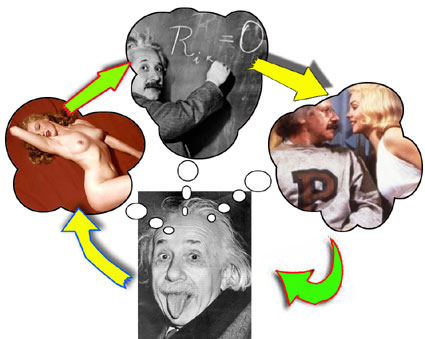

HOME - IQ TESTS - CREATIVITY - GENIUS - BRAIN STORMING - BLOG
SEX TRANSMUTATION:
How to use SEX to "electrify" your mental powers and become a rampant creative genius!

Sex is everywhere these days, isn't it? You can't turn on your computer without
being hit by a hundred different sexually related emails. Porn sites have dictated the evolution of the internet,
driving forward into new realms of marketing, design, sales technology, and god only knows what else. All that
innovation driven by the energy of sex!
Flip through a magazine, turn on the TV, and it seems that every other advert has
some kind of sexual component used to sell everything from clothes to light bulbs (the ultimate
turn-on!).
Why? Why all this nudity? What're all the cleavage shots about? Why is that
muscular man drinking that soft drink while the women gawp at him?
Sex moves us to action. Sex inspires mighty deeds. Sex sells!
Chat with Einstein... Get Rid of Phobias...
Enjoy Sexual Adventures!
It's all at your fingertips, when you
explore the exciting world of lucid dreaming.
Let me show you how easy it can be:
>> Click HERE
How sex drives the brain...
Sexual energy is the lust for life in all forms. Have you heard
of SPERM
COMPETITION? Well, you should have - you've been living it! It's the
natural force that drives intelligence forward in all creatures!
Everybody knows that males are promiscuous and ferociously competitive when it
comes to sex. Men's competitiveness revolves around physical strength and dominance at the basic level, and moves
up the scale to include attractiveness, intelligence, ingenuity, organisational power, leadership and
wealth.
For ages it was politely assumed that females--both human and of other
species--are naturally monogamous. Er ... hello? ... Not so!!
Females, it has become clear, are equally promiscuous, if not more so, and have
evolved an astounding array of creative strategies, employed both before and after copulation, to determine exactly
who will father their offspring.
Do you get that? Sex, good old rumpy pumpy sex, has been the driving force of
creativity, resourcefulness and evolution itself in both men and women for millennia! And because we humans get
such pleasure from sex, we don't just want it when spring is in the air ... we want it all the fucking
time!
That's probably why we are the dominant species on this planet! We've been so
focussed on sex and relationships that we've become super smart as a species!
Don't believe me? Look around you. Why is that incredible looking girl with that
dumpy little guy? Either he's smart and rich, or smart and funny, or smart and famous, or smart and creative, or
smart and kind with a big-dick!
Whatever it is, he had to be smart to get the girl, because he sure didn't get her
because of his looks or physique! You can see exactly the same intelligence at work with women.
Everyone contrives to get the best possible person that they can get in order to
mate with them (based on a combination of their own criteria and a primitive innate evaluation system, modified by
how screwed up they are!).

SEX TRANSMUTATION
The desire for sex is the most powerful of human desires.
"When driven by this desire, men develop keenness of
imagination, courage, will-power, persistence, and creative ability unknown to them at other
times." says Napoleon Hill in his classic book, Think and
Grow Rich.
Now, YOU can use SEX to purposely power up your brain and let your creative genius
juices flow. Here's how:
The Sex Spurts
Guide To Turning-On Your Creative
Juices!
1. If it ain't hot and hard already, stoke up the
fire...
It's a well known fact that most of the geniuses, creators, leaders and entrepreneurs
of the past and present have very strong sex drives. If you are a bit 'limp' or 'cold' when it comes to sex, you
need to take action and get your juices flowing again! Whether you turn to Viagra, or if you are a woman take herbs
like muirapuama, catuaba, and maca, you've got to get your sex energy up and buzzing.
If you are healthy, you are going to have a strong sex drive. If you have any kind
of long-term illness, particularly anything affecting the spine, the kidneys, or sex organs, then you need to do
whatever you can to beat that illness with the help of your medical practitioners.
Personally, I'd also recommend you start working on mental causes and work with
the ideas presented by Louise Hay in her book "You Can Heal Your Life". Then I'd suggest you start to explore
natural health and particularly the area of raw food diet. The Bragg health guides (www.bragg.com) are
excellent and have stood the test of time. I also like the book, "Radical Rejuvenation" by Roxy Dillon, which
features an excellent guide to the best use of aphrodisiac herbs.
2. Revel in your sexual energy... rejoice in the life force gushing
between your thighs!
How sensuous are you?? Do you delight in the tastes of foods and drink? Do you relish
the warm touch of bare skin or the coolness of satin? Do you allow yourself to experience pleasure in your
environment, in the beauty and wonder of Nature?
What about music? Can you get sassy with Barry White, groove to L'il Kim, soar
with Mozart, and just delight in the abundance of pleasure and good feelings that music brings you? This is a great
big wonderful world of sensation and experience. Learn to experience things in the present moment, fully and
completely!
Remember your sex energy is your lust for life! It's your passion! Get passionate,
get sensuous! Love your body! I know that's a toughie for a lot of people, but if you don't do it you'll never
discover your Paradise Portal!
Paradise Portal? What's that?!
Your body is a portal to Paradise. Your body is an instrument that can create and
experience pure unadulterated Bliss! Get in there and love it! Feel it, touch it, play with it, pleasure it, and
savour the sensations that your body gives you as you kiss, as you stroke, as you masturbate or as you
fuck!
And if you have a problem with the F-word - practice saying, "I Love To Fuck" 100
times a day until you can say it and take a dirty ribald pleasure in saying it! Love the life in you - it's really,
really good!
3. Get yourself a muse and amuse yourself...
To paraphrase Paul McCartney you "need somebody to love"! He's a great example of a
modern genius using a muse to inspire his creativity. Think of all the wonderful love songs he has written for the
late Linda McCartney such as "Maybe I'm Amazed", "I Will", "The Lovely Linda" and "My Love". His mum, his children,
John Lennon's son, Heather Mills, and Nancy Shevell have all inspired him to write beautiful songs that have
become hits.
Who do you love? Who do you lust after?
I remember when I was first courting my wife. I remember it as one of the most
creative times of my life! And it was such fun! We met and fell in love over the telephone and didn't actually meet
for the first 6 - 8 weeks. I was a horny young devil of 24 and the air was ripe with innuendo and sexual
wordplay... and laughter. When you've got a muse you are always amused! We exchanged cards, faxes and letters, all
of which were gems of pure creative genius - in that we both laughed hysterically and felt wonderful! We were both
doing our utmost to woo and win the other...
When all of your passion and sexual energy is focussed on the pursuit of another
and the attempt to win their affection, your mind fires on all cylinders!
Shakespeare had his secret lover. Napoleon had his Josephine. Cleopatra had Mark
Anthony.
Who do you have to inspire you to mighty deeds and great thoughts?
If you are married... my commiserations. No! I'm joking! Do you still have that
lust for your partner? If not, can you remember it? When you feel love for them, how do you express it? Feel inside
and be guided as to how you want to show them that you love them, that you want them!
Imagine how you'd feel if they died. What would you want to say to them? They are
going to die, someday. And so are you. You have a limited amount of time. Be aware of it and see your relationship
within that context. It can be the spur that makes you want to express your love!
If you are anything like me, you are constantly trying to figure out how to get
more sex with your partner! It takes being a genius to figure out how to fit it in what with work, her schedule, my
schedule, the toddlers schedule, eating, sleeping, exercising, doing the laundry, housework!
I've got charts and blueprints drawn up! "Okay, she'll be here at this time.
She'll be wearing sweat pants then - easy to pull down he-he-he! The kid'll be watching TV downstairs, I'll have
approximately 18 minutes to initiate something before I need to go give him his 2nd stage of breakfast before
nursery school. Hmm ... I need an excuse to be there ...aha! Eureka! I'll just say..." etc :-))
But then, I'm such a dawg!
Now if you are single and looking... well, the world is chock full of muses! You
need your wits about you constantly. You need to be on your best form as you talk and try to tantalize the
potential lovers you pursue.
Look all around you. You can fall in love a dozen times a day when you are single
and hungry for love. You can lust after 50 strangers or more a day too!
Your restless eyes scan all the people you meet and measure them against your
internal "cuteness" gauge. If they meet your mark, all the internal bells go off, the adrenaline and endorphins
start to pump inside you and your pheromones go into overdrive! You gaze over and try and catch their eyes. Is
there a spark? Is there a smile for you?
When you are in that state of yearning, you are at the gateway to creativity. You
can speak eloquently of your lust, your love, your pain ... probably not to the person you are hounding after, but
if you try to express it by writing down your thoughts, you'll probably find yourself writing at a higher level
than normal.
When you are directly vying for the attention of someone you fancy, you'll strive
to impress him or her. You'll be funnier, more daring, and more original than normal. All that is mitigated of
course by how nervous you feel, your self-esteem and level of confidence. But usually after the initial nervousness
has worn off, you can really get in your stride.
Maybe you'll compose a song. Write a poem. Think up jokes. Research things that
he/she is interested in. Paint pictures. Cook elaborate dinners. Read more books. Reflect on movies. And figure out
how the hell you are going to get into his/her pants! And stay there as long as you want!
Enjoy SEXUAL PLEASURES with Lucid Dreaming:
Brand new course reveals all.
Click HERE to learn more >>
4. Why saying "No" to Sex can skyrocket your creative
passion...
I wanted to call this section "Agaping hole you just want to fill and fill... but
don't!" But that's just being crude and a little obscure rather than clever! What I do want to tell you about is
Agape and Courtly love.
Agape (pronounced “ä gä´ p-a-”) is a Greek word meaning “unselfish love of one
person for another” which Gandhi used during his non-violent campaigns in India.
Mahatma Gandhi was a funny old bird. He had a lot of very kooky ideas! But what a
genius...
You probably know that he was a celibate. And at the height of his powers he wore
little more than a loincloth and endured lengthy periods without food. He used fasting as a way to protest against
the harsh rule of the British in India.
It is said that during these long protest fasts, Gandhi would sleep (while
remaining celibate) with two virgin girls either side of him. Apparently this helped to boost his energy levels and
gave him the mental fortitude to persist. Hmm, I wonder if my wife would let me do that next time I'm doing a fast?
;-)
Fasting is physically debilitating and you don't have a lot of energy for sex. But
have you ever had a cold or the flu, and then seen your partner naked? You know you are not "up to it" physically
but the mind is still willing! Old men report the same thing ... they know they can't get an erection but they
still enjoy thinking about sex!
Gandhi was tantamount to a saint in his commitment to his spirituality. He would
have taken that buzz of physical closeness and turned it into pure love, and used that energy to figure out his
next move in his campaign to peacefully oust the British.
On a more romantic level let's talk about "Courtly
Love".
The Knights in shining armour - fantasy figures for hundreds of years of women
right to the present day it seems - had a special code of conduct when it came to amour... they called it Courtly
Love.
Now there appear to be several interpretations and versions of courtly love. But
the basic idea runs something like this...
The dashing young knight, Sir Loves Tolancealot, arrives at the castle and soon
falls in love with a nobleman's pretty wife and vice versa. He however is a man of honour and she a virtuous woman.
Under the rules of courtly love they can let their passion flow unbridled as long as they don't engage in physical
intercourse. This was known as a donnoi relationship.
So while Sir Loves Tolancealot and the Lady Prettipuss might engage in sleeping
together nude, nude caresses and embraces, they can't and won't copulate! But you can be sure there were hours and
hours of mutual ravishing with the eyes, punctuated by doting, frustrated sighs!
Been there, done that! ;-)
Now according to the historical reports left to us by these Knights and fair
Ladies, and sung about by wandering minstrels and troubadours, courtly love was highly popular. These relationships
ignited their imaginations and lifted their psyches to new levels of emotional intensity and feeling, much more
than ordinary sexual pairings did.
If you get yourself into that heightened state of emotional intensity you are
going to be:
- More aware
- More sensitive to stimuli
- Feeling more alive
- Exuberant and expressive
- More energised and inspired
... And those are all qualities you can draw on to be creative, inspirational, and
exceptionally minded.
So learn to tease your desire and hold it at fever pitch, because arousal will
benefit you mentally and spiritually. You can do it with anything you want - it doesn't have to be sex, though sex
is the most effective. When you are hungry, take a piece of fruit into your mouth and just "hold" it there ... see
how long you can go without actually chewing it, just close your eyes and taste it, feel its texture, savour
everything about it.
With your sexual partner you might try experimenting with "courtly love". Let your
desire and lust build and build. Restrict yourself to cuddles, caressing and anything but full-penetrative orgasm.
You can even practice karezza - where the man penetrates the woman but you just embrace each other without
thrusting and just feel one-another and bask in the sensations.
Experiment with courtly love. The longer you can go, the more creative you will
become. Just keep on finding ways to express your love/lust without actually going the whole hog. Keep that feeling
as high as possible. And from that state, create, invent, write, sing, dance, express yourself!
5. Transforming Sexual Energy into Pure Genius!
So let's recap. Sexual desire is the most powerful human emotion. By achieving a
state of sexual desire and maintaining it, you keep the mind in a heightened state of arousal and activity. When
you mix sex and love, you have the perfect mix for drawing on the creative mind... if you can transmute or turn
your desire for sex into a desire for something else, such as writing a poem, working out a business problem or
getting direct spiritual insights.
Over indulgence in sex and orgasm, will quell the feeling of desire and the affect
that it has on the mind. Once a man ejaculates, more often than not he rolls over and falls asleep! One moment he's
a tiger, straining with every part of his body and mind to get what he wants ... the next he's
unconscious!
Female arousal is slower to heat up and slower to cool down, so the affect of
sexual arousal on the mind is not so obvious. But it still works the same way.
Your goal is to access states of mind that geniuses do. You require the
stimulation of the most powerful human emotion: sex. This will bring your mind to a heightened state of awareness
and sensitivity. In expanded states of consciousness you have access to sources of knowledge that you would not
otherwise have when simply involved in everyday reality thinking (worry, obsessing, trivial pursuits
etc).
Let's say that you want to brainstorm for a business idea. You've obviously given
it a lot of "rational" conscious thought and not really come up with anything. Take yourself somewhere private and
comfortable, settle down, relax. Begin to get aroused. You can fantasise about your lover, about getting naked and
making love. You might also physically stimulate yourself through masturbation (hence the need for privacy!). Get
good and hot! However, don't get too carried away. You are not to come or ejaculate.
When you are aroused, use your will-power to turn your mind to your business, and
turn that arousal and state of lust over to the problem or challenge. You can actually shift your desire for your
lover over to the problem or rather to the solution to the problem. How? Well, it requires a bit of imagination.
And imagination is the primary tool of genius, as it is the gateway to intuition and infinite wisdom.
Simply imagine that you are equally turned-on by the idea of getting a solution to
this problem. Make love to the problem and seek out the climax - the answers you are seeking. Yes, I know this is
bizarre and weird but it works! Just fake it till you make it. You can do anything that you can conceive
of.
This will work in any field of endeavour.
Get aroused. Then focus on your area of work and what you want to achieve in it.
Focus your mind on all the known factors of your particular project (all the information you have gathered, all the
actions that you have taken so far). Then allow a perfect mental picture to arise of all the unknown factors (what
remains unfinished).
Hold that vision and let it saturate your mind.
Then let it go. Clear the mind of all thought.
And wait for the answer to "flash" into your mind!
6. Conserve Sexual Fluids if you want to be The
Greatest!
Muhammad Ali knew it. All the great fighters know it. You can't be at your best if
you've recently "come".
This is a controversial and much argued subject.
On the one hand, if you have sex and ejaculate and lose bodily fluids, it is said
that you are weaker physically and mentally for a period of time after. And that is the experience of many men and
women. Hence the expression, "I feel totally shagged out!" or "I fucked my brains out last night!"
On the other hand, when you are very uptight and sexually pent-up, having sex can
relax you, release mental knots and allow you to flow into different states of consciousness.
Sexual fluid though is very similar chemically to brain fluids. Deplete one and it
seems that you deplete the other.
The Taoist Sages and Martial Art teachers advise that we refrain from "wasteful"
ejaculation and instead internalise orgasmic energy, directing it upwards so that it can nourish the brain and
enliven various energy points and chakras.
At the simplest level, redirecting the sexual energy involves tensing the anal
sphincter muscles and the muscles that control the flow of urine, to stop ejaculation, and imagining the sexual
energy flowing up into the brain. Please refer to the following books for detailed instruction.
For Men:
"Taoist Secrets of Love: Cultivating Male Sexual
Energy" by Mantak Chia
For Women:
"Healing Love Through The Tao: Cultivating Female Sexual
Energy" by Mantak Chia & Maneewan Chia
These books are also available through the website: http://www.universal-tao.com . ...And from
most online booksellers and big offline bookstores.
The art of Chi Kung and particularly Sexual Chi Kung is too complex to convey
here. However, I highly recommend it and strongly advise that you investigate further. Chi Kung is rapidly emerging
in the West as an exceptional health system that can have profound effects on body, mind and spirit.
Prayer mat of the flesh...
Sex is one the most wonderful experiences of human life. Unless you've been
"screwed up". This powerful life force that flows through you is the life force of Creation itself. It is a wild
force that can lash out and cause damage unless harnessed with love and wisdom. When it is used intelligently and
channelled into Love, romance and creative pursuits that add to the beauty and abundance of life, then it may be
said to be the energy of the Creator. And that is You!
The Supreme Intelligence of Life seeks to create and expand infinitely. The genes
of all life forms fight and scheme to expand their dominance. Sex driving them on.
Worship this living energy of Universal Intelligence that flows in your body...
and you will gain access to that Infinite Source of Wisdom!
Sex is the genius gene-in-us!
Reader's follow-up question:
Like this article? I'd love to hear from YOU! Email me:
wily[at]wilywalnut.com
Highly Recommended:
2-CD Course: Practical Application of
Integrative Sex Transmutation
References:
Promiscuity: An Evolutionary History of Sperm Competition
by Tim Birkhead
http://www.2think.org/promiscuity.shtml
Lucy's Legacy: Sex and Intelligence in Human Evolution
by Alison Jolly
http://www.2think.org/lucy.shtml
The Code of Chivalry and Courtly Love
http://www.astro.umd.edu/~marshall/chivalry.html
Courtly Love - lists the distinctions
http://www.depaul.edu/~dsimpson/tlove/courtlylove.html
Courtly Love (general note)
http://icg.fas.harvard.edu/~chaucer/special/lifemann/love/
Enjoy SEXUAL PLEASURES with Lucid Dreaming:
Master your sexual energy in the dream state.
Click HERE to learn more >>
Wily Walnut is the headbrain at http://www.WilyWalnut.com, your top
resource for unleashing the genius within, becoming infinitely creative, intelligent and brilliant in all
that you do!
GENIUS ARTICLES HOME IQ TESTS - CREATIVITY - GENIUS - BRAIN STORMING - SELF-HELP - BRAINTEASERS - WILY WALNUT
|